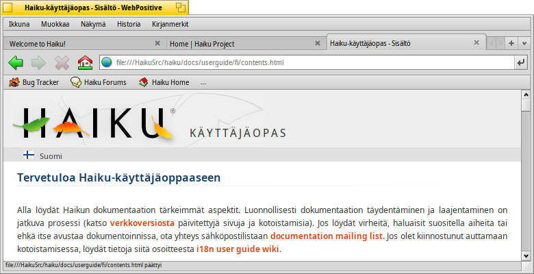
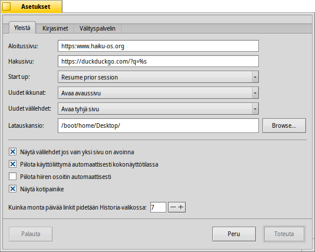
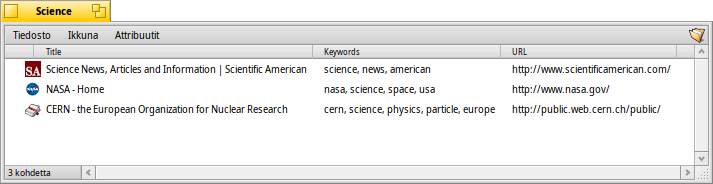
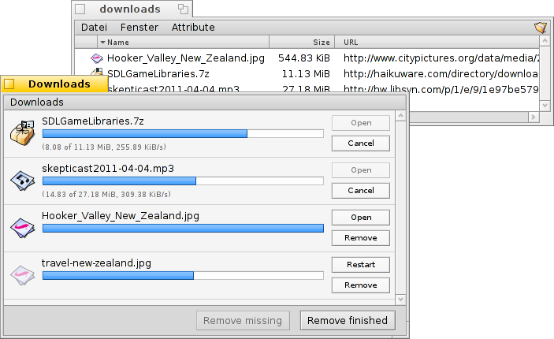

WebPositive
WebPositive
| Työpöytäpalkki: | ||
| Sijainti: | /boot/system/apps/WebPositive | |
| Asetukset: | ~/config/settings/WebPositive/ - Asetustiedostoja, evästeitä, välimuisti ja selaushistoria | |
| ~/config/settings/WebPositive/Bookmarks - Kaikki kirjanmerkit yhtenä tiedostona |
WebPositive, tai lyhyesti Web+, on Haikun oma webbiselain. Yksi osa sen nimestä on lainaus BeOS:n yksinkertaisesta NetPositive-selaimen nimestä, toinen osa osoittaa nykyaikaiseen perustaan: WebKit. Tämä avoimen lähdekoodin HTML-renderöintikirjasto on muiden valtavirran webbiselainten ydin, kuten Mac OS X-tietokoneiden Safari ja Googlen Chrome. Käyttämällä edelleen kehittyvää WebKit-kirjastoa Web+ kykenee pysymään ajan tasalla uusissa web-tekniikoissa.
WebPositiven käyttöliittymä on aika suoraviivainen: Valikkopalkin alla on toinen painikepalkki navigointiin selainhistorian edelliselle ja seuraavalla sivulle, sivun lataamisen lopettamiseen ja (valinnaisesti) painike aloitussivulle hyppäämiseen.
Sitten tulee sijaintikenttä webbisivun verkko-osoitteen kirjoittamista varten.
Tämän navigointipalkin alla on webbisivut. Voit avata useita sivuja rinnakkain lataamalla ne omiin välilehtiin.
Ikkunan pohjalla on tilapalkki, joka näyttää ladattavana olevan sivun verkko-osoitteen tai linkin, jonka yllä hiiren kohdistin on parhaillaan. Sivua ladattaessa oikealle ilmaantuu edistymispalkki.
 Asetukset
Asetukset
-valikosta voit avata -paneelin muutamia WebPositiven tärkeitä asetuksia varten.
Ensimmäisessä välilehdessä käsitellään yleisasetuksia: Mitä tiedosto tai verkko-osoite palvelee na, mitä käytetään na, mitä na netistä saatavaa materiaalia varten.
Kaksi ponnahdusvalikko sallii sinun päättää, että mitä sivua ladata - jos mitään - kun avataan uusi ikkuna tai välilehti.
Seuraavien valintaruutujen kautta vältät näyttämästä välilehtipalkkia, jos avoinna on vain yksi sivu. WebPositiven käyttöliittymä voidaan ohjata piiloutumaan automaattisesti kokonäyttötilassa, ja hiiren osoitin piilotetaan automaattisesti, jos hiirtä ei vähään aikaan siirretä.
Lopuksi voit päättää sisällyttää "Koti"-painikkeen navigointipalkkiin ja asettaa niiden päivien lukumäärän, joina selaina muistaa historiassaan vieraillut sivut.
Toisessa välilehdessä voit valita vakio-, serif-, ei-serif- ja tasaväliset kirjasimet ja asettaa niiden oletuskoon.
Viimeistä välilehteä käytetään välityspalvelimen asettamiseen.
Selataan
Jos olet aiemmin käyttänyt jotain webbiselainta, niin WebPositiven ei pitäisi tarjota kovin montaa yllätystä. Sen sijaan, että kävisimme lävitse jokaisen valikkorivin ja ominaisuuden, katsokaamme vain muutamaa kohtaa.

Uudet välilehdet luodaan +-painikkeella välilehtipalkin oikeassa reunassa tai jos tillaa on riittävästi, kaksoisnapsauttamalla sen tyhjää aluetta. Jos välilehtiä on enemmän kuin mitä mahtuu välilehteen, < > -vierityspainikkeet tulevat aktiiviseksi, mikä sallii vierittää välilehtipalkkia vasemmalle ja oikealle. Painike ∨ kaikkein oikeanpuoleisimpana kätkee ponnahdusvalikon, josta kaikki avoimet välilehdet voidaan valita vieläkin nopeammin navigointiin.
Linkin napsauttaminen hiiren keskimmäisellä eli kolmospainikkeella avaa taustalle sivun uudessa välilehdessä. Pitämällä alhaalla VAIHTO-näppäintä hiiren keskimmäistä painiketta napsautettaessa linkki avautuu edustalle.
Valikosta voit ja sivua. Valittavana on myös , mikä jättää kuvat alkuperäisen kokoisiksi.
Jos vaihdat kokonäyttötilaan ja käyttöliittymän piilotusasetus on aktivoitu, käyttöliittymä katoaa sekunnin kuluttua. Se liukuu takaisin näkyviin yksinkertaisesti liikuttamalla hiiren osoitinta näytön yllä.

Kun kirjoitat sijaintitekstikenttään, selain täsmää merkkijonon webbisivuosoitteisiin, joilla olet vieraillut aiemmin ja luettelee ne tekstikentän alapuolella. Voit joka jatkaa kirjainten lisäämistä lyhentääksesi mahdollisten sivujen luettelon, tai valita rivi näppäimellä ↑ tai näppäimellä ↓. ENTER-näppäin lataa valitun sivun. Voit myös käyttää oikeanpuoleisinta painiketta sivun uudelleenlataamiseen.
Google etsii ne merkkijonot, joita ei tunnisteta verkko-osoitteiksi, joten sijaintikenttä nopeuttaa pikaisen webbihaun.Napsautettavasta kohteesta riippuen hiiren kakkospainike avaa asiayhteysvalikon, jossa on linkki uuteen ikkunaan tai välilehteen, kohteen lataukseen jne.
näyttää etsintäpalkin sivun alalaidassa sivun sisäisen etsinnän käynnistämiseksi. Hakuosumat korostetaan sivulla.
Kirjanmerkit
WebPositiven kirjanmerkit hallinnoidaan tiedostoina ja kansioina hakemistossa ~/config/settings/WebPositive/Bookmarks/. Kirjanmerkin lisääminen lisää sinne uuden tiedoston. Voit avata kansion nopeasti valikolla .
Voit vaihtaa kirjanmerkkien verkko-osoitetta, nimeä, otsikkoa ja kirjoittaa avainsanoja aivan kuin kaikilla muilla tiedostoilla attribuuttien avulla. Varmista vain, että kaikkien niiden sarakkeet näytetään Seuraajan -valikossa, valitse sitten tiedosto, paina näppäimiä ALT E ja aloita attribuutin muokkaaminen; vaihda attribuuttisarakkeita näppäimellä SARKAIN.
Voit lajitella kirjanmerkkejä luomiisi eri kansioihin.
Käyttämällä Seuraajaa kirjanmerkkien hallintaan ja navigointiin nostat nopeasti esiin sen ainutlaatuiset ominaisuudet, jotka auttavat nopeasti löytämään etsimäsi.
Aktivoimalla Seuraaja-asetukset-sovelluksessa voit välittömästi supistaa kirjanmerkkiluettelosi täsmäämään suodatustasi. Muutama ↑ tai ↓ näppäily siirtää valinnan ja näppäimen ENTER painaminen avaa sivuston. Varmista, että näytetään kaikki attribuuttisarakkeet, jotta suodatus koskee nimeä, otsikkoa, verkko-osoitetta ja avainsanoja.
Tätä työtä varten kaikki kirjanmerkit tulisi pitää kansiossa ~/config/settings/WebPositive/Bookmarks/ ja vain kopiot pitäisi lajitella omiin alikansioihin WebPositiven -valikkokäyttöä varten (jos ollenkaan). Myös avainsanojen todellinen täyttäminen auttaa...
Lataukset
avaa ikkunaluettelon kaikista entisisttä ja meneillään olevista latauksista:
Parhaillaan ladattavat tiedostot näytetään kasvavana etenemispalkkina ja samalla kopioidaan tiedostot Seuraajassa, tiedot latausnopeuksesta, tiedostokoosta ja odotetusta päättymisajasta. Oikealla olevat painikkeet ja lataus, tai tiedosto, tai rivi luettelosta. Alimmaisena painikkeet ja tekevät tämän luettelon kaikille riveille. "Puuttuva" on tiedosto, joka on poistettu latausaikana.
Parhaillaan ladattavan tiedoston siirtäminen Roskakoriin pysäyttää lataamisen. Huomaat myös, että sen kuvakkeesta tulee "haamu".
Yleensä WebPositive suhtautuu hyvin suvaitsevaisesti tiedostojen hallintaan Seuraajassa. Tiedostoja voidaan uudelleennimetä tai siirtää latauksen aikana ja vieläpä latauksen päätytty, nämä muutokset heijastuvat Lataukset-ikkunaan.
Oletko koskaan ihmetellyt, että mistä sivustolta latasit tietyn paketin, kuvan tai jonkun muun tiedoston? Voit jäljittää sen avaamalla tiedoston Levyasemakoestin-sovelluksella ja katsomalla tiedoston META:url-attribuuttia.
Haluatko näyttää verkko-osoitteet pysyvästi latauskansiossa? Kopioi vain kirjanmerkki siihen, laita kirjanmerkin verkko-osoite-attribuutti näkyväksi ja poista kirjanmerkki uudelleen.
Pikanäppäimet
Tässä on joitakin hyödyllisiä pikanäppäimiä:
| ALT T | Avaa uuden välilehden. | |
| ALT W | Sulkee nykyisen välilehden. | |
| ALT N | Avaa uuden ikkunan. | |
| VAIHTO ALT W | Sulkee nykyisen ikkunan. | |
| ALT ENTER | Vuorottelee kokonäyttötila ja osaikkunan välillä. | |
| ALT R tai F5 | Päivittää nykyisen sivun. | |
| ALT H | Avaa kotisivun. | |
| ALT D | Näyttää/piilottaa Lataukset-ikkunan. | |
| ALT F | Näyttää etsintäpalkin sivunsisäisessä etsinnässä (piilotetaan painikkeella ESC). | |
| ALT B | Kirjanmerkitsee nykyisen sivun. | |
| ALT M | Hallinnoi kirjanmerkkejä, avaa Kirjanmerkit-kansion. | |
| ALT ← | Edellinen historiasivu. | |
| ALT → | Seuraava historiasivu. |